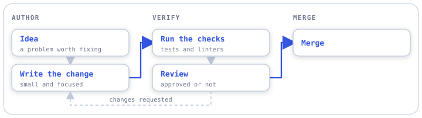

A diagram can now opt in to the column-and-spine look with one small JSON file beside its .mmd. Every render draws light and dark SVGs from it, the folder README shows them, and render --png turns them into rasters with a bundled monospace font.
Write <id>.layout.json next to <id>.mmd: 2–6 lanes, 1–4 nodes each, optional loops and one rejoin.
Bad JSON, out-of-bound labels, a stale source hash or an orphan sidecar each get their own finding code.
show-your-work check docs/workflowsEvery render writes rasters/<id>-light.svg and -dark.svg and embeds them in README with a <picture> that follows the GitHub theme.
With the render extra, house PNGs come out at 2× through resvg and the bundled DejaVu Sans Mono, the same on every machine.

docs/workflows/example-workflow, generated by render from example-workflow.layout.json (canvas 720 × 202; the PNG is 1440 × 404).checkStrict JSON parsing (duplicate keys, NaN, huge integers rejected), every bound from section 2.4, a CRLF-tolerant source hash that pins the sidecar to its .mmd, 64 KiB and symlink gates.
A stdlib engine with fixed geometry and per-theme palettes. Generated files carry a marker as their first child, so user files are never overwritten and only marked orphans are deleted.
accepted · 1 style nit waivedresvg-py 0.5.0 with system fonts skipped, fonts shipped in the wheel with pinned hashes, a tEXt provenance tag, and anchors that fail the run if text would render blank.
accepted · 2 style nits waived--png runThe plan's contract sections updated, a README "Layout sidecar" guide, this repo's example diagram given a sidecar, and an installed-CLI run at exactly 2× the viewBox.
pass · first review round| What | Value |
|---|---|
| Branch | main, pushed; origin/main at the Phase 2 wrap commit |
| Commits | d0a6045 · 5b7fa37 · 6337668 · c37c2e7 · ce6809d · 8daed5c |
| Issues closed | #13 #14 #15 #16 · posterity #18 |
| Tests | 461 passed, 8 skipped (was 284) |
| Type and lint | mypy --strict, ruff and ruff format clean |
In that project, write docs/workflows/build-and-playtest-loop.layout.json from the README "Layout sidecar" section, then run check --render and render --png and confirm the PNG shows white pills, a blue spine and the dashed playtest-to-build return. M1 (#9) and M2 (#10) from Phase 1 are still open too.